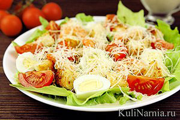

Рецепт приготовления
Салат Цезарь классический с курицей

Ингредиенты
- Салат айсберг - 30 г
- Курица - 50 г
- Сыр пармезан- 15 г
- Сухарики из белого хлеба - 5 г
- Яйцо - 1 шт.
- Оливковое масло - 1 ч.л.
- Соль, перец, уксус - по вкусу
Порядок приготовления
Перед началом приготовления всего остального ставим вариться яйцо всмятку (3-5 минут).
Далее салат моем и рвем руками на куски. Жарим или специально сушим сухарики для салата.Можно купить готовые сухарики.
Курицу обжариваем на сковородке 15 минут и нарезаем тонуими пластинками.
Яйцо нарезаем на дольки.Выкладываем салат на тарелку, поливаем оливковым маслом.

Из существующих легенд происхождения салата мне нравится та, в которой американский повар с итальянским именем Цезарь Кардини
был поставлен перед задачей срочно сообразить закусон, а кроме хрустящих листьев салата ромэн, багета и яиц, которые бы он все
равно не успел бы сварить, у него ничего не было в наличии. Повар не растерялся и перемешал салатные листья с яйцом, сбрызнул
оливковым маслом, лимонным соком и вустерским соусом, кинул сухариков и подал ... После того, как салат очень положительно
впечатлил едоков, ему присвоилось имя повара, который позднее ещё усовершенствовал всё это дело в более спокойной обстановке.